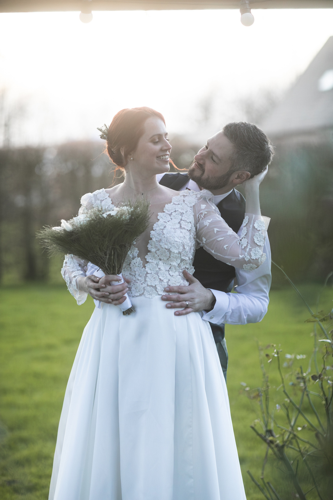

Écoute
Prendre le temps de comprendre votre histoire.

Découvrez celle qui se cache derrière La Maison d’Édith.


Je m’appelle Anaïs Burel, fondatrice de La Maison d’Édith.
L’organisation de mon propre mariage a été une véritable révélation. J’ai adoré imaginer chaque détail, créer une ambiance unique, coordonner les préparatifs et voir un projet prendre vie jusqu’au grand jour.
Cette expérience m’a donné envie de transformer ma passion en métier. Aujourd’hui, je vous accompagne pour que vous profitiez pleinement de votre moment, pendant que je veille à ce que tout se déroule parfaitement.
Avec tout mon cœur, Anaïs.
Prendre le temps de comprendre votre histoire.
Vous accompagner avec transparence et sérénité.
Créer une expérience pensée jusque dans ses nuances.
Imaginer une célébration qui vous ressemble.
En collaboration avec une wedding designer, je mets expertise et créativité au service de votre célébration.
Faire connaissance ↗Une première rencontre pour découvrir vos envies.
Choisir les prestataires et organiser chaque étape.
Profiter pleinement de votre journée, tout simplement.
Quelques mots suffisent pour commencer à écrire votre journée idéale.
Raconter mon projet ↗